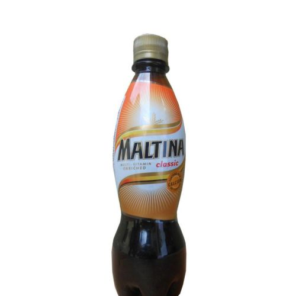
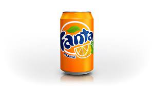
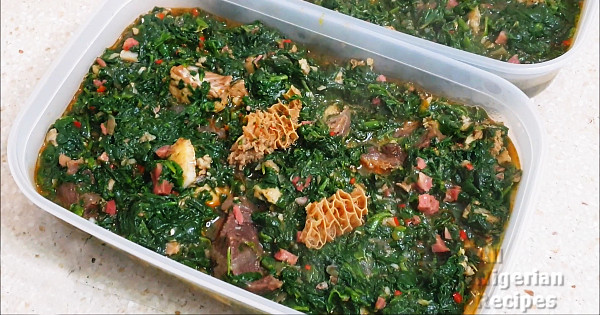
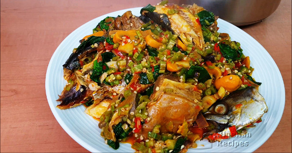
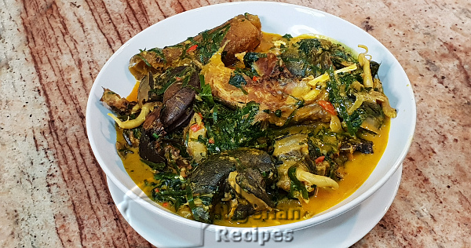
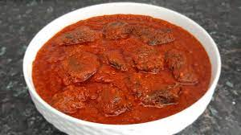
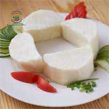
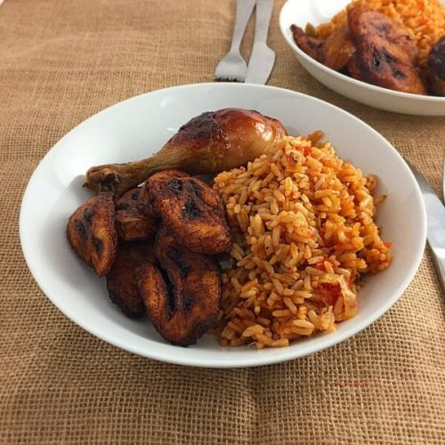
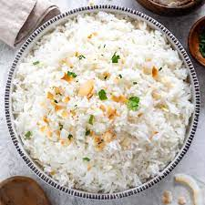
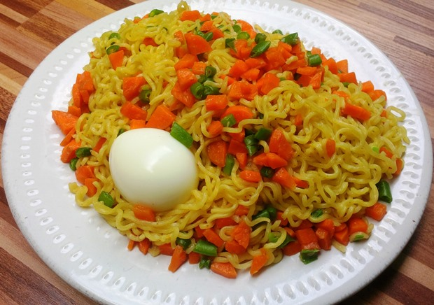

A butter cake is a cake in which one of the main ingredients is butter. Butter cake is baked with basic ingredients:
butter, sugar, eggs, flour, and leavening agents such as baking powder or baking soda. It is considered as one of the
quintessential cakes in American baking.
One quantity is a single slice.
₦300
Biscuit Cake
Biscuit cake is a type of no bake tea cake, similar to American icebox cake, found in Irish, English, Danish, Arabic
and Jewish cuisine. It is made with digestive biscuits and is optionally prepared with a chocolate glaze.
In the
tasting, strawberry flavor veered wildly from nonexistent (most) to bubble-gum-sweet to full and bright (very few).
The
dairy background was sometimes round and creamy, often overly tart and icy — probably because of the presence of
strawberry juice in the mixture.
One quantity is a single slice.
₦300
Strawberry Ice Cream
One important benefit of strawberry ice cream is that it provides energy, Ice cream is rich in proteins, carbohydrates,
and fats which when broken down in the body produces energy. Our bodies need all these nutrients to provide energy.
Since ice cream is sugary, it is crucial to be taken in moderation to prevent weight gain among other undesired gains.
One quantity is a single cup.
₦500
Vanilla
Vanilla has long been the best-selling ice cream flavor not only because it is creamy and delicious, but also because of
its ability to enhance so many other desserts and treats,” said Cary Frye, IDFA vice president of regulatory and
scientific affairs and nationally respected expert on ice cream and frozen desserts.
One quantity is a single cup.
₦500
Cholcolate Ice Cream
What are the benefits of chocolate ice cream?
Health Benefits of Ice Cream
It Is Loaded With Vitamins and Minerals. ...
It Gives You Energy. ...
It Helps Boost Your Immunity. ...
It Helps in Stimulating Your Brain. ...
It Helps in Strengthening Your Bones. ...
It Makes You Happier. ...
It Increases Your Libido. ...
It Prevents Breast Cancer.
One quantity is a single cup.
₦500
Chicken Shawarma
Shawarma is a Levantine Arab dish consisting of meat cut into thin slices, stacked in
a cone-like shape, and roasted on a slowly-turning vertical rotisserie or spit. Originally made with lamb, mutton or
chicken, today's shawarma may also be turkey, beef, or veal. Thin slices are shaved off the cooked surface as
it continuously rotates. Shawarma is one of the world's most popular street foods, especially in Turkey, Egypt,
Russia, and Pakistan, as well as the countries of Central Asia, the Levant, Arabian Peninsula, and beyond. Shawarma is
prepared from thin cuts of seasoned marinated lamb, mutton, veal, beef, chicken, or turkey.
One quantity is a single wrap.
₦1000
Meat Pie
A meat pie is a pie with a chunky filling of meat and often other savory ingredients. They are popular in Australia and
New Zealand, Canada, Europe and the United Kingdom, Ghana, Nigeria, South Africa, and Zimbabwe.
As with most pies, the pasty is usually baked, fried, or deep fried at a high enough temperature to induce the Maillard
reaction, which changes the colour of the pastry to a golden or brown colour, and greatly increases the pastry's
richness and flavour. Depending on how the pastry is prepared, when cooked the pastry might also acquire a tender, flaky
structure.
It depends upon the talent of the chef to achieve the desired pastry effect while also cooking the internal filling to
achieve food safety at a desired service temperature; meat pies are often served hot, sometimes far too hot to quickly
consume. Tender cuts of meat tend to become tough at higher temperatures, whereas tough cuts of meat with more
connective tissue can become more tender at higher temperatures, so the cooking strategy will often vary depending on
the filling contents. In some cases, it may be necessary to partially precook either the filling or the crust to obtain
the desired balance of effects in the final pie.
One quantity is a single pie.
₦300
Goat Shawarma
Shawarma is a Levantine Arab[4] dish consisting of meat cut into thin slices, stacked in
a cone-like shape, and roasted on a slowly-turning vertical rotisserie or spit. Originally made with lamb, mutton or
chicken, today's shawarma may also be turkey, beef, or veal. Thin slices are shaved off the cooked surface as
it continuously rotates. Shawarma is one of the world's most popular street foods, especially in Turkey, Egypt,
Russia, and Pakistan, as well as the countries of Central Asia, the Levant, Arabian Peninsula, and beyond. Shawarma is
prepared from thin cuts of seasoned marinated lamb, mutton, veal, beef, chicken, or turkey.
One quantity is a single wrap.
₦1000
Fish Shawarma
Shawarma is a Levantine Arab dish consisting of meat cut into thin slices, stacked in
a cone-like shape, and roasted on a slowly-turning vertical rotisserie or spit. Originally made with lamb, mutton or
chicken, today's shawarma may also be turkey, beef, or veal. Thin slices are shaved off the cooked surface as
it continuously rotates. Shawarma is one of the world's most popular street foods, especially in Turkey, Egypt,
Russia, and Pakistan, as well as the countries of Central Asia, the Levant, Arabian Peninsula, and beyond. Shawarma is
prepared from thin cuts of seasoned marinated lamb, mutton, veal, beef, chicken, or turkey.
One quantity is a single wrap.
₦1000
Sprite
Sprite doesn't contain caffeine, it may provide a boost of energy and exert effects similar to those of caffeine when
drunk in excess. Sprite is a clear, lemon-lime soda that doesn't contain caffeine but is high in added sugar. Thus,
similarly to caffeine, it may provide a jolt of energy. Sprite is a colorless, lemon and lime-flavored soft drink
created by The Coca-Cola Company. It was first developed in West Germany in 1959 as Fanta Klare Zitrone ("Clear Lemon
Fanta") and was introduced in the United States under the current brand name Sprite in 1961 as a competitor to 7 Up.
Sprite comes in multiple flavours, including cranberry, cherry, grape, orange, and vanilla.
One quantity is a single 35cl bottle.
₦150
Teem
Teem is a lemon-lime-flavored soft drink produced by The Pepsi-Cola Company. It was introduced in 1960 as Pepsi's answer
to 7 Up and Coca-Cola's Sprite.
Bitter Lemon is a lemon-flavored beverage similar to tonic water. ... Lemon is used as a mixer for alcoholic beverages,
but you can also drink it on its own. ... as it is high in calories and does not provide a large degree of nutritional
benefits. Teem is the idle drink for our old parents because of its low sugar content. Medical researches proves it is
good for men as per it enhances sperm production
One quantity is a single 60cl bottle.
₦200

Maltina
Maltina is the smooth, nourishing malt drink with complete richness. Launched as a food supplement, Maltina is fortified
with Vitamins and Calcium for healthy families. Maltina remains the category leader with its innovations and message of
sharing happiness. Maltina is the first locally produced Malt Drink in Nigeria and the only Malt Drink endorsed by the
Nutrition Society of Nigeria. A healthy you is a happy you. It is richly packed with essential Vitamins and Minerals
(Vitamin A, B1, B2, B3, B5, B6 and C, including Calcium) to keep your body and mind completely vitalized.
Maltina is the first locally produced Malt Drink in Nigeria and the only Malt Drink endorsed by the Nutrition Society of
Nigeria. A healthy you is a happy you. It is richly packed with essential Vitamins and Minerals (Vitamin A, B1, B2, B3,
B5, B6 and C, including Calcium) to keep your body and mind completely vitalized.
Maltina is the smooth, nourishing malt drink with complete richness. Launched as a food supplement, Maltina is fortified
with Vitamins and Calcium for healthy families. Maltina remains the category leader with its innovations and message of
sharing happiness.
One quantity is a single 35cl bottle.
₦200

Fanta
Bright, bubbly and popular, Fanta is the soft drink that intensifies fun. Introduced in 1940, Fanta is the second oldest
brand of The Coca-Cola Company. Bright, bubbly and popular, Fanta is the soft drink that intensifies fun. Introduced in
1940, Fanta is the second oldest brand of The Coca-Cola Company. Fanta Orange soda has 110 calories. It does not contain
any fat, cholesterol, protein or fiber, and only has 35 milligrams of sodium. The total amount of carbohydrates in this
beverage is 30 grams, which come exclusively from sugar. The soda does not contain any vitamins or minerals. It does not
contain caffeine.
One quantity is a single 33cl can.
₦200
Coca Cola
Coca-Cola, or Coke, is a carbonated soft drink manufactured by The Coca-Cola Company. Originally marketed as a
temperance drink and intended as a patent medicine, it was invented in the late 19th centuryWhether you’re enjoying the
refreshing taste of Coca Cola Original Taste or Zero Sugar, drinking Coca Cola is a simple pleasure that makes everyday
moments more special.
One quantity is a single 33cl can.
₦200

Vegetable Soup
Nutritional Benefits Of Veg Soup:
Aids In Weight Loss.
Promotes Digestion.
Rich Source of Fluids.
Powerhouse Of Antioxidants.
Strengthens Bones.
Preserves Nutrition Of Veggies.
Promotes Cardiac Functioning.
One quantity is a single plate.
₦400
Smoov Chapman
A Chapman is a non-alcoholic drink, usually red in colour. Sometimes referred to as a non-alcoholic punch, it is
traditionally made with a mix of Fanta, Sprite, Cucumber, Lemon, Grenadine and Angostura bitters and is traditionally
served in a large mug with ice and a few slices of cucumber.
One quantity is a single 50cl bottle.
₦200

Okra Soup
7 Nutrition and Health Benefits of Okra:
Rich in nutrients. Okra boasts an impressive nutrient profile. ...
Contains beneficial antioxidants. Okra packs many antioxidants that benefit your health. ...
May lower heart disease risk. ...
May have anticancer properties. ...
May lower blood sugar. ...
Beneficial for pregnant women. ...
Easy to add to your diet.
One quantity is a single plate.
₦400

Ofe Owerri
Ofe Owerri has got so many health advantages. Ugwu (pumpkin) leaf is known to be highly rich in iron and calcium. It's
said that this vegetable has great antioxidant capacities, helping to restore any damage to our cells and skin,
protecting our heart and enhancing youth. Cocoyam is also a good source of Vitamins.
One quantity is a single plate.
₦400
Nsala Soup(White Soup)
5 Health Benefits Of Eating Ofe Nsala (White Soup):
Immunity booster. Ofe Nsala contains properties that helps in developing the body's immune system. ...
It has also proven to be helpful for women who just went through pregnancy. ...
It is spicy and can help drive away cough and catarrh.
Contains omega-3 fatty acid.
Contains vitamin E and C.
One quantity is a single plate.
₦400
Catfish Pepper Soup
Top 5 Benefits Of Eating Catfish Pepper Soup:
Good For The Muscles. With the protein catfish contains, it is a great meal and wonderful source of amino acids
for
your body. ...
Protection Of The Heart. ...
Good For Pregnant Women. ....
Healthier Eyes. ...
Treatment Of Sleeping Disorder.
One quantity is a single plate.
₦500
Ora Soup
Well prepared ora soup makes digestion easy. The dietary fiber found in it helps to improve the digestive function,
explore and absorb the nutrient well. It prevents constipationThis fiber helps to digest the food well, so the food
residue can be pushed out of the body easily. It regulates the blood glucose levels
One quantity is a single plate.
₦500
Chicken Stew
Chicken broth is rich with essential fatty acids and protein. Both help your body build and repair healthy muscle, bone,
skin, and blood cells. Chicken broth is also a rich source of minerals like iron.
Chicken broth is rich with essential fatty acids and protein. Both help your body build and repair healthy muscle, bone,
skin, and blood cells. Chicken broth is also a rich source of minerals like iron.
One quantity is a single plate.
₦400

Beef Stew
11 health benefits of eating beef:
Beef Provides a Large Source of L-Carnitine. ...
Beef Provides the “Master Antioxidant” Glutathione. ...
Beef is Extremely Rich in Minerals. ....
Eating Beef Helps Prevent Iron Deficiency Anemia. ...
Eating Beef Helps Prevent Iron Deficiency Anemia. ...
Beef is Full of Vitamins.
One quantity is a single plate.
₦400
Turkey Stew
Turkey meat health benefits
Turkey is a very rich source of protein, niacin, vitamin B6 and the amino acid tryptothan. Apart from these nutrients,
it is also contains zinc and vitamin B12. The skinless white meat of turkey is low on fat and is an excellent source of
high protein. Turkey also contains anti-cancer properties.
One quantity is a single plate.
₦400
Ofe Akwu (Banga)
Nutritional benefits of Banga Soup:
is essential for building strong bones.
prevents heart disease.
prevents Cancer risk.
improves Vision.
reduces the effect of premenstrual syndrome symptoms such as insomnia, weight gain, bloating, leg swelling and breast
tenderness.
nourishes the human skin and hair.
One quantity is a single plate.
₦400
Garden Egg Sauce
Rich in flavonoids, garden eggs help to promote heart health and reduce the risk of high blood pressure. Garden eggs are
low in calories and can contribute to a healthy low-calorie diet. It is also rich in fibre which can help increase
satisfaction and reduce appetite.
One quantity is a single plate of Yam and Egg Sauce.
₦700
Eba (Garri)
What is the nutritional value of Gari?
Like other members of Araceae family, it grows from the fleshy tuber, which is used majorly for food, and it supplies
digestible starch, substantial amount of protein, vitamin C, riboflavin, thiamine, niacin, and significant amount of
dietary fiber that is richer than cassava tuber.
One quantity is a single wrap.
₦100
Agidi
From the nutritional value of Agidi or Eko, we can see that it is packed with some important nutrients. Now let’s find
out some of the health benefits of agidi based in it nutrient composition. Good for Eye Health
Remember. Good for weight loss. Improves digestive health.. Healthy food for toddlers. Healthy food for pregnant women
Bottom Line
Agidi or Eko is a popular food in Nigeria. It contains so many important vitamins and minerals. The health benefits of
agidi include it’s the ability to improve eye health, aid weight loss, and improve digestive health
One quantity is a single wrap.
₦100
Fufu (Akpu)
It is rich in carbohydrates and minerals. The Nigerian Civil War (1967-1970) caused large-scale outbreaks of nutritional
diseases such as kwashiorkor and beriberi as fierce battles in areas including cassava fields crippled farming
activities.
One quantity is a single wrap.
₦100
Agidi Jollof
From the nutritional value of Agidi or Eko, we can see that it is packed with some
important nutrients. Now let’s find
out some of the health benefits of agidi based in it nutrient composition. Good for Eye Health
Remember. Good for weight loss. Improves digestive health.. Healthy food for toddlers. Healthy food for pregnant
women
Bottom Line
Agidi or Eko is a popular food in Nigeria. It contains so many important vitamins and minerals. The health benefits of
agidi include it’s the ability to improve eye health, aid weight loss, and improve digestive health
One quantity is a single wrap.
₦100

Boiled Yam
Here are 11 health and nutrition benefits of yams:
Packed with nutrition. Yams are rich in vitamins, minerals, and fiber. ...
May enhance brain function. ...
May ease symptoms of menopause. ...
May have cancer-fighting properties. ...
May reduce inflammation. ...
May improve blood sugar control. ...
Easy to add to your diet.
One quantity is a 4 piece.
₦300

Jollof Rice
Five Health Benefits of Jollof Rice:
Jollof Rice makes you happy. ...
May enhance brain function. ...
Jollof Rice strengthens family and friendship bonds. ...
Jollof Rice strengthens national bonds. ...
Jollof Rice brings back good memories, very key to good mental health.
One quantity is a a plate of Rice.
₦400
Jollof Pasta
Pasta also offers:
Sustained Energy: Carbohydrates like pasta provide glucose, the crucial fuel for your brain and muscles. ...
Low Sodium and Cholesterol Free: If you're watching your cholesterol levels, pasta is perfect for you, being very low
in sodium and cholesterol free. ...
Folic Acid: ....
Balanced Diet:
One quantity is a a plate of Pasta.
₦400
Fried Rice
Five Health Benefits of Fried Rice:
Fried Rice makes you happy. ...
May enhance brain function. ...
Fried Rice strengthens family and friendship bonds. ...
Fried Rice strengthens national bonds. ...
Fried Rice brings back good memories, very key to good mental health.
One quantity is a a plate of Fried Rice.
₦400

Coconut Rice
Five Health Benefits of Coconut Rice:
Jollof Rice makes you happy. ...
May enhance brain function. ...
Jollof Rice strengthens family and friendship bonds. ...
Jollof Rice strengthens national bonds. ...
Jollof Rice brings back good memories, very key to good mental health.
One quantity is a a plate of Coconut Rice.
₦400
White Rice
Five Health Benefits of White Rice:
White Rice makes you happy. ...
May enhance brain function. ...
White Rice strengthens family and friendship bonds. ...
White Rice strengthens national bonds. ...
White Rice brings back good memories, very key to good mental health.
One quantity is a a plate of White Rice.
₦100

Noodles
Nutrition content
Basically, instant noodles are made up of salt, wheat flour and water. The micro nutrients differ according to various
brands of instant noodles. Withal, instant noodles have low calories, protein, fiber, mineral and vitamins.
Essential nutrients
Some instant noodles provide essential nutrients to the body. The nutrients in instant noodles differ according to
brands. Some brands include manganese and Vitamin B complex such as thiamine and riboflavin. Literally the study shows
that more than 6000 instant noodle consumers showed 31% and 16% greater intake of thiamine and riboflavin respectively.
Low carbs
Rice noodles offers 44 grams of carbs per cup. It has higher glycemic index which means body breaks it down into sugar
quickly.
Full for longer
One bowl of instant noodles keeps one full for longer time period as it takes time to get digested.
One quantity is a a plate of Noodle and Boiled Egg.


.jpg)